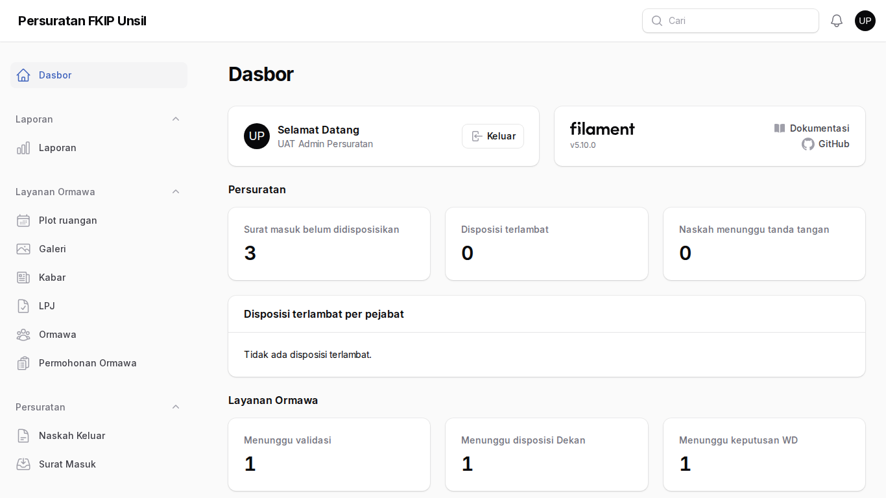
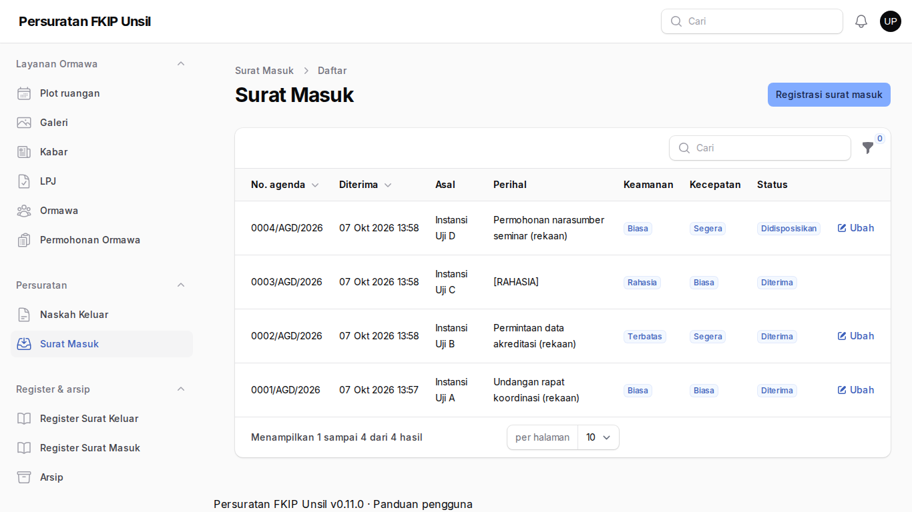
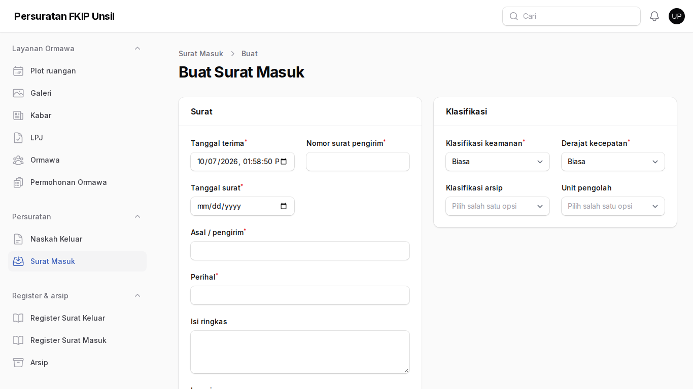
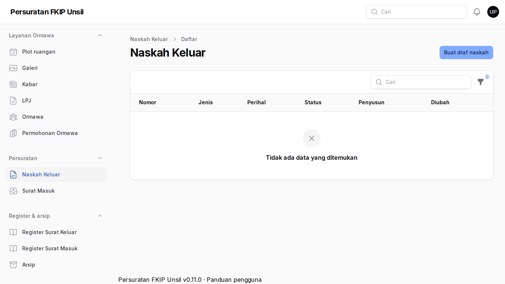
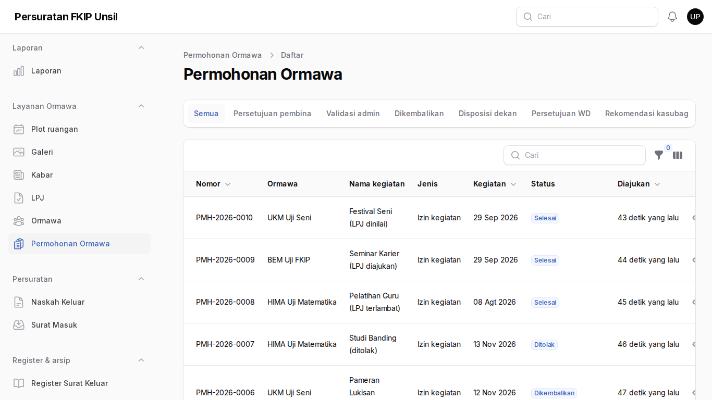
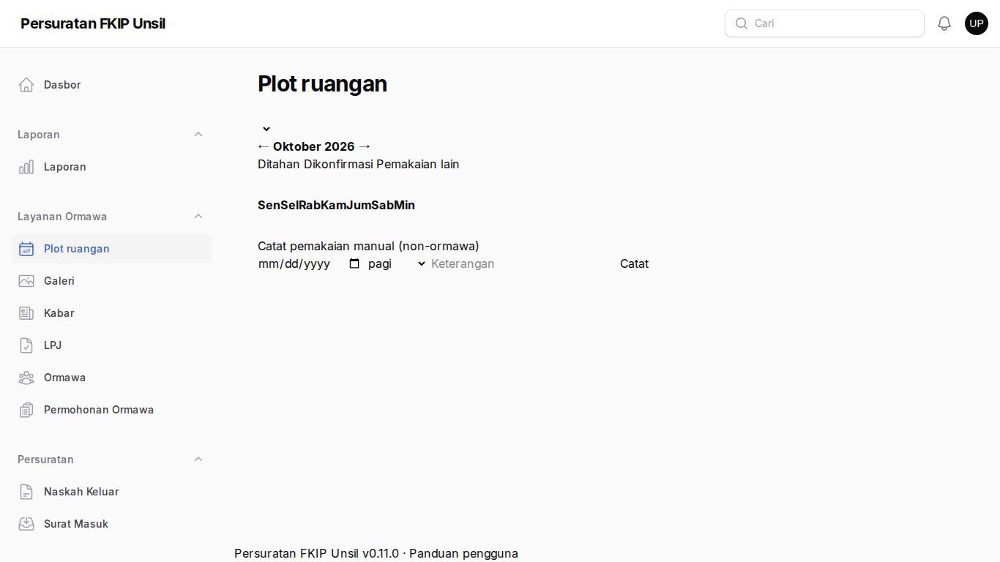
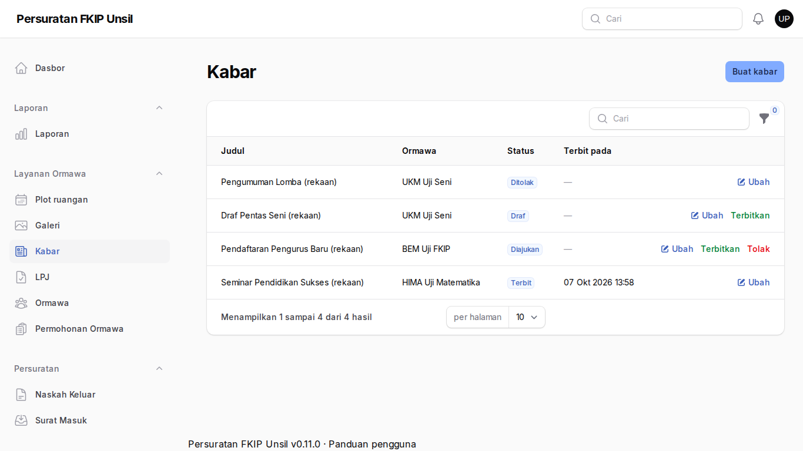
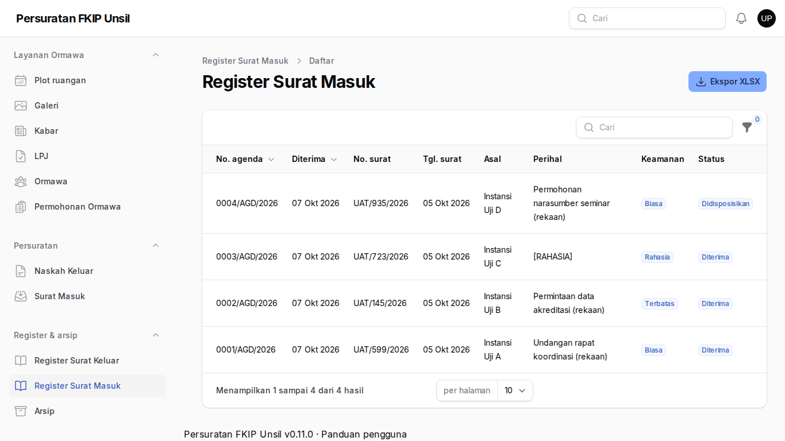
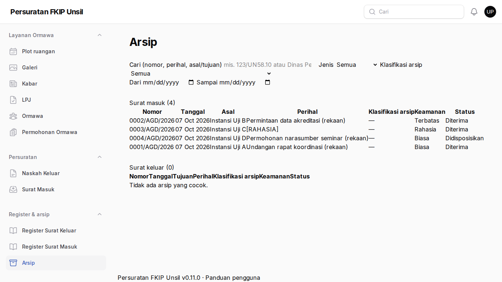
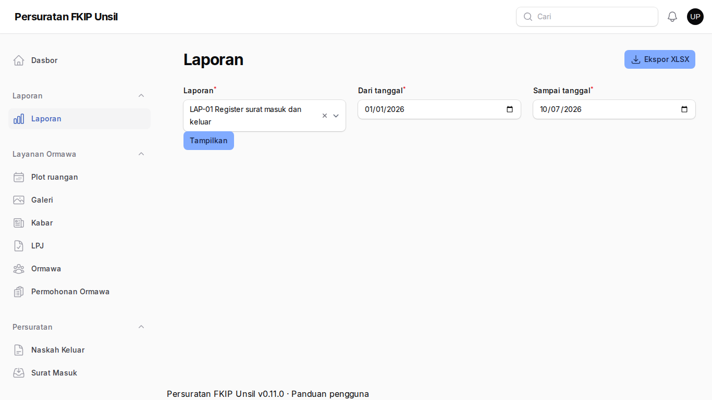

Admin persuratan
Tujuan
Meregistrasi surat masuk, menyusun dan menerbitkan naskah bernomor, memvalidasi permohonan ormawa, mengelola ormawa/kabar/galeri, serta laporan dan arsip.
Cara masuk
Akun dibuat super-admin. Wajib menyiapkan MFA pada masuk pertama ke /admin.
Langkah-langkah
- Dasbor
Surat masuk belum didisposisikan, naskah menunggu tanda tangan, permohonan per tahap, dan LPJ terlambat.
Langkah 1 — Dasbor - Daftar surat masuk
Setiap surat bernomor agenda otomatis. Surat selesai dapat Diarsipkan.
Langkah 2 — Daftar surat masuk - Registrasi surat masuk
Isi asal, nomor dan tanggal surat, perihal, klasifikasi, dan tautan pindaian (wajib). Nomor agenda terbentuk saat disimpan.
Langkah 3 — Registrasi surat masuk - Naskah keluar
Susun dari templat → ajukan paraf → tanda tangan → nomor otomatis → terbitkan.
Langkah 4 — Naskah keluar - Permohonan ormawa
Tab per status; Validasi, Kembalikan (catatan wajib), atau Tolak (alasan wajib).
Langkah 5 — Permohonan ormawa - Plot ruangan
Kalender ruangan × sesi: pemakaian layanan, ditahan, dan dikonfirmasi; catat pemakaian manual.
Langkah 6 — Plot ruangan - Kabar
Terbitkan atau tolak kabar usulan ormawa; buat kabar fakultas.
Langkah 7 — Kabar - Register surat masuk
Pencarian dan ekspor register; perihal rahasia disamarkan.
Langkah 8 — Register surat masuk - Arsip
Cari nomor, perihal, asal/tujuan, dan klasifikasi; menghormati klasifikasi keamanan.
Langkah 9 — Arsip - Laporan
LAP-01…LAP-06 dengan filter periode dan ekspor XLSX.
Langkah 10 — Laporan
Tanya jawab
Nomor naskah tidak muncul.
Nomor hanya terbentuk saat naskah ditandatangani, bukan saat draf.
Tidak dapat membuka surat rahasia.
Hanya dekan dan penerima disposisi; admin melihat metadata registrasi saja.